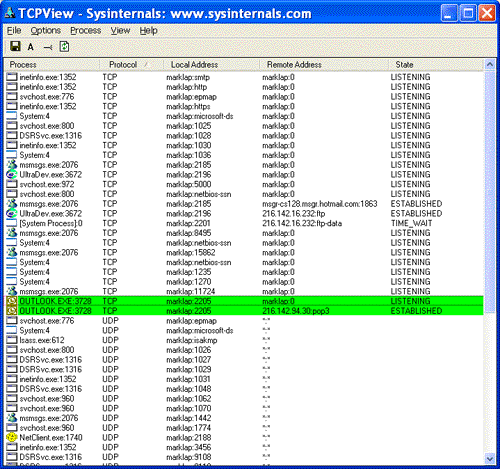

TCPView is a Windows program that will show you detailed listings of all TCP and UDP endpoints on your system, including the local and remote addresses and state of TCP connections. On Windows NT, 2000 and XP TCPView also reports the name of the process that owns the endpoint. TCPView provides a more informative and conveniently presented subset of the Netstat program that ships with Windows. The TCPView download includes Tcpvcon, a command-line version with the same functionality.
TCPView works on Windows NT/2000/XP and Windows 98/Me. You can use TCPView on Windows 95 if you get the Windows 95 Winsock 2 Update from Microsoft.
When you start TCPView it will enumerate all active TCP and UDP endpoints, resolving all IP addresses to their domain name versions. You can use a toolbar button or menu item to toggle the display of resolved names. On Windows XP systems, TCPView shows the name of the process that owns each endpoint.
By default, TCPView updates every second, but you can use the Options|Refresh Rate menu item to change the rate. Endpoints that change state from one update to the next are highlighted in yellow; those that are deleted are shown in red, and new endpoints are shown in green.
You can close established TCP/IP connections (those labeled with a state of ESTABLISHED) by selecting File|Close Connections, or by right-clicking on a connection and choosing Close Connections from the resulting context menu.
You can save TCPView's output window to a file using the Save menu item.
Tcpvcon usage is similar to that of the built-in Windows netstat utility:
Usage: tcpvcon [-a] [-c] [-n] [process name or PID]
Wonder how TCPView works? Netstatp is a program with source that demonstrates how to program some of TCPView's functionality. It shows how to use IP Helper interfaces, documented in MSDN, to obtain a list of TCP/IP endpoints. Note, however, that netstatp doesn't show process names on NT 4 and Win2K like TCPView and TCPVCon.
This Microsoft KB article references TCPView:
816944: "Unexpected Error 0x8ffe2740 Occurred" Error Message When You Try to Start a Web Site
TDImon shows you TCP and UDP activity in real-time.
If you like TCPView, you'll love TCPView Pro. TCPView Pro, a Winternals Software product, has a number of features that make it much more powerful and useful than TCPView: See what process has each endpoint opened (on Win9x as well)
TCPView Pro is available as part of Winternals Administrator's Pak.
Download TCPView and TCPVCon (81 KB)
Download Netstatp with Source Code (42 KB)